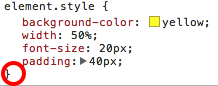

Now let's play with CSS! You may have noticed something about the sample web pages on the previous page: they're ugly! That's because HTML is meant to define the structure of the page, and another language, called CSS, is used to make it look nice. CSS stands for "Cascading Style Sheets," which is quite a mouthful. You'll learn what all those words mean in a little bit. For now, let's make some web pages look prettier.
Here's a page that shows how to create a yellow banner (don't forget to view the source!): yellow banner page
That's a simple page, but we'll use that as starting point to play with CSS. Here's another cool feature of Google Chrome: right click (or control-click on a Mac) on the banner and then choose "Inspect Element." What pops up is the best playground a web developer like yourself could imagine. There are lots of different things you can do in this playground, but we'll focus first on what you should immediately see: the HTML source of the page together with some information about the CSS on the right.
First, look at the HTML source. You'll notice we have a standard "p" (for "paragraph") tag, but then we add this bit:
style="background-color: yellow; width: 50%; font-size: 20px; padding: 40px"
That's CSS. As you can see, you use it to define what the HTML elements look like. Here, we're setting the background color to yellow, the width to 50% of the page, the font size to 20 pixels, and the padding (the space around the edge of the banner) to 40 pixels.
Now for the fun part: let's play with it! See how on the righthand side, Google Chrome has a little window like this?
Click the word "yellow" and then type in "red". Cool, right? You can use most common color names to specify the color. But if you want to get fancier, you can use RGB (red-green-blue) values. Those look like this: #40D2A4. Try putting that value into the box and see what happens. Web developers don't memorize crazy combinations of letters and numbers, though. We use pages like this that show us different colors and let us grab the RGB value.
Now click the checkbox next to "background-color" — that turns off the background color completely, as if that code didn't exist at all. That can be a really handy way to know if your CSS code is doing what you think it's doing.
Go through each property listed and play with the values. For "width", try different percent values. Then, try values like "100px" and see what happens.
You may have noticed a little arrow next to the "padding" property. If you click that, you'll see that it expands into four different properties. Using the "padding" property is really just a shorthand for specifying the padding above, on the right, on the left, and below the text. That's just one of the many things you can learn by playing around with CSS in this way.
You can even add new CSS parameters on the fly, which is a great way to experiment with CSS. Just click near the end of the list of parameters — roughly where the red circle is here:
